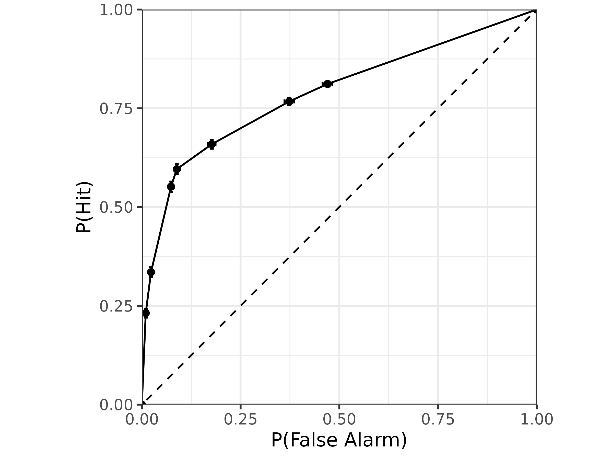
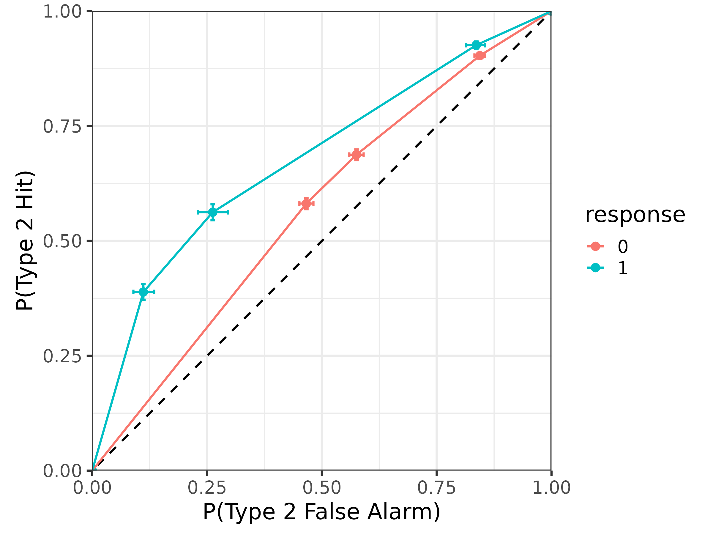

Using alternative signal distributions with the meta-d' model
Source:vignettes/alternative_distributions.Rmd
alternative_distributions.RmdIntroduction
The standard meta-d’ model assumes that the evidence for making type
1 decisions follows an equal-variance normal distribution and that the
evidence for making type 2 decisions follows a truncated equal-variance
normal distribution. However, there has been recent interest in using
other distributions in signal detection theory. While not all
distributions will be identifiable with the meta-d’ model (e.g., one
cannot simultaneously estimate unequal variances and \textrm{meta-}d'), the
mRatio package allows one to specify any distribution that
takes a single parameter defining the location (i.e., mean, median, or
mode) of the distribution.
To demonstrate this functionality, here we implement the meta-d’ model with the Gumbel-min distribution, which has been shown to provide a parsimonious explanation of recognition memory data (Meyer-Grant et al, 2025).
We begin by loading necessary packages in R:
Implementing a distribution function for use with
mRatio
In order for a distribution to be used with the mRatio
package, one needs to implement its cumulative distribution functions in
both R and Stan. Specifically, since the
mRatio package computes the model likelihood on the
logarithmic scale, one must define:
-
<distribution>_lcdf(x, mu): the log cumulative distribution function defining \textrm{log } P(X \le x) for a random variable X \sim \textrm{distribution}(\mu). -
<distribution>_lccdf(x, mu): the log complementary cumulative distribution function defining \textrm{log } P(X \ge x) for a random variable X \sim \textrm{distribution}(\mu).
Please note that for use with the mRatio package, these
two functions must use the above naming scheme (i.e.,
must be named <distribution>_l(c)cdf).
For example, we can write the gumbel min distribution functions in
R as follows:
gumbel_min_lcdf <- function(x, g) {
log1p(-exp(-exp(x - g)))
}
gumbel_min_lccdf <- function(x, g) {
-exp(x - g)
}One also needs to implement the two functions in Stan
using brms::stanvar so that they are available to
brms during model fitting. Fortunately, the functions
themselves will usually look almost identical to their definitions in
R, with only minor syntactic changes and/or use of more
efficient helper functions. The code below implements the same two
functions in Stan:
gumbel_min <- stanvar(
scode = "
real gumbel_min_lcdf(real x, real g) {
return log1m_exp(-exp(x - g));
}
real gumbel_min_lccdf(real x, real g) {
return -exp(x - g);
}",
block = "functions"
)Again, note that the name of the functions in Stan must
match their corresponding names in R. With the
lcdf and lccdf functions implemented in both
R and Stan, the new distribution is ready to
use with the mRatio package!
Data simulation
Before continuing on to model fitting, this section describes how to simulate data from the meta-d’ model with your custom distribution. This is a necessary step for parameter recovery to ensure that the meta-d’ model is well-defined with respect to your distribution.
To simulate data, you can call the sim_metad function
supplying the optional arguments lcdf and
lccdf:
Model fitting
Once you have some data, fitting the model is exactly the same as
with the equal-variance normal distribution, only now we also need to
specify two additional arguments to fit_metad.
- The
distributionargument should be the name of the distribution as a string. This should be the part of the function names preceding"_lcdf"and"_lccdf"in bothRand inStan. - The
stanvarsargument should be thestanvarobject you have created above containing theStancode for your cumulative distribution functions.
Otherwise, one can call fit_metad just as with the
equal-variance normal distribution! Please note, however, that the scale
of all parameters will vary from distribution to distribution, so set
priors accordingly. The code below shows how to fit the meta-d’ model
with our new gumbel_min distribution:
m <- fit_metad(N ~ 1,
data = d,
prior = prior(normal(0, 1), class = Intercept) +
prior(normal(0, 1), class = dprime) +
prior(normal(0, 1), class = c) +
prior(lognormal(-1, 1), class = metac2zero1diff) +
prior(lognormal(-1, 1), class = metac2zero2diff) +
prior(lognormal(-1, 1), class = metac2zero3diff) +
prior(lognormal(-1, 1), class = metac2one1diff) +
prior(lognormal(-1, 1), class = metac2one2diff) +
prior(lognormal(-1, 1), class = metac2one3diff),
distribution = "gumbel_min", stanvars = gumbel_min, file = "models/gumbel.rds"
)#> Family: metad__4__gumbel_min__absolute
#> Links: mu = log
#> Formula: N ~ 1
#> Data: data.aggregated (Number of observations: 1)
#> Draws: 4 chains, each with iter = 2000; warmup = 1000; thin = 1;
#> total post-warmup draws = 4000
#>
#> Regression Coefficients:
#> Estimate Est.Error l-95% CI u-95% CI Rhat Bulk_ESS Tail_ESS
#> Intercept -0.61 0.06 -0.73 -0.49 1.00 3591 3343
#>
#> Further Distributional Parameters:
#> Estimate Est.Error l-95% CI u-95% CI Rhat Bulk_ESS Tail_ESS
#> dprime 1.55 0.03 1.49 1.61 1.00 5722 3474
#> c 0.11 0.01 0.08 0.14 1.00 3812 2821
#> metac2zero1diff 0.24 0.01 0.22 0.26 1.00 5298 3297
#> metac2zero2diff 0.49 0.01 0.46 0.51 1.00 5293 3210
#> metac2zero3diff 0.25 0.01 0.23 0.27 1.00 6152 2811
#> metac2one1diff 0.10 0.01 0.09 0.11 1.00 4581 2940
#> metac2one2diff 0.48 0.01 0.45 0.50 1.00 4205 3027
#> metac2one3diff 0.25 0.01 0.23 0.27 1.00 4670 2731
#>
#> Draws were sampled using sampling(NUTS). For each parameter, Bulk_ESS
#> and Tail_ESS are effective sample size measures, and Rhat is the potential
#> scale reduction factor on split chains (at convergence, Rhat = 1).The model summary can be interpreted just as with any other model,
however here you can see that the model family is
metad__4__gumbel_min__absolute, indicating that this model
indeed uses the gumbel_min distribution with four
confidence levels and \textrm{meta-}c =
c.
Model estimates
Once the model is fit, it can be post-processed like any other model
from the mRatio package. Because alternative distributions
are often understood in terms of their effects on the ROC, here we will
focus on plotting them.
Looking at the pseudo-type 1 ROC, we can see that the
gumbel_min distribution exhibits an asymmetry:
# psuedo type-1 ROC
tibble(.row = 1) |>
add_roc1_draws(m, bounds = TRUE) |>
median_qi(p_fa, p_hit) |>
ggplot(aes(
x = p_fa, xmin = p_fa.lower, xmax = p_fa.upper,
y = p_hit, ymin = p_hit.lower, ymax = p_hit.upper
)) +
geom_abline(slope = 1, intercept = 0, linetype = "dashed") +
geom_errorbar(orientation = "y", width = .01) +
geom_errorbar(orientation = "x", width = .01) +
geom_point() +
geom_line() +
coord_fixed(xlim = 0:1, ylim = 0:1, expand = FALSE) +
xlab("P(False Alarm)") +
ylab("P(Hit)") +
theme_bw(18)
Likewise, the gumbel_min distribution also has
asymmetric type 2 ROCs:
# type 2 ROC
roc2_draws(m, tibble(.row = 1), bounds = TRUE) |>
median_qi(p_hit2, p_fa2) |>
mutate(response = factor(response)) |>
ggplot(aes(
x = p_fa2, xmin = p_fa2.lower, xmax = p_fa2.upper,
y = p_hit2, ymin = p_hit2.lower, ymax = p_hit2.upper,
color = response
)) +
geom_abline(slope = 1, intercept = 0, linetype = "dashed") +
geom_errorbar(orientation = "y", width = .01) +
geom_errorbar(orientation = "x", width = .01) +
geom_point() +
geom_line() +
coord_fixed(xlim = 0:1, ylim = 0:1, expand = FALSE) +
xlab("P(Type 2 False Alarm)") +
ylab("P(Type 2 Hit)") +
theme_bw(18)